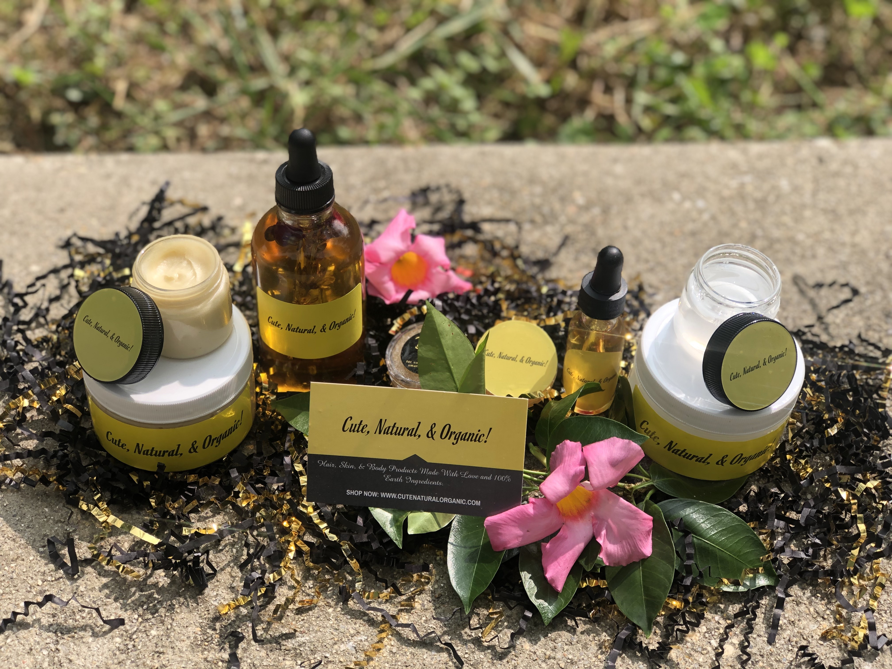

At the age of 12 I became entrigued in what I consumed and put onto my body. During the early 2000's it was an era where black women were embracing their natural curls and stopped getting perms. People did not want to get perms because they had to many chemicals which lead to chemical burns and bald spots. I was confused on why the newer products that were meant for natural hair did not contain natural products. That is when I started creating products with all natural ingredients. Check out my website in the link below for my handmade skin and hair products!
Cute, Natural, & Organic!
Home Page